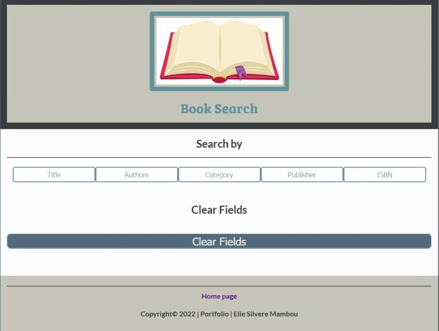

Wireframes
Responsive

Responsive View
Tablet

Tablet View
Mobile

Mobile View
Elie Silvere Mambou, WDD330, Spring 2022
The purpose of the Book Finder is to provide a userfriendly tool to those who want to access to hte world books library through easy steps.
The Book Finder app is a friendly and powerful tool. The app is more like a "book finder". It comes with many ways to search a book you want to read. The app will allow its user to find a book of his/her choice through the description by typing the title, or author, publisher, category, or ISBN.
The targeted audience for this app includes students, teachers, workers, parents, and anyone who wants to find quickly a book of his choice.
External API - The primary datasource for this application is the rapid API,
RapidAPI, the world's largest API hub, is used by over three million developers to find, test, and connect to thousands of APIs — all with a single API key and dashboard.
Google fonts "Satisfy" and "Yellowtail" will be used in the CSS styles.
The following examples show how the app will look First working model of the app It features styling, appearance, components, color and typography.
|
Basic layout of the app with results.
The user enter the book title for example to retrieve all relevant results about the topic. User can enter one or more search options to find the book of his/her choice. "Title, Author, Category, publisher, ISBN, are used as filters. |

Figure 1 |
Responsive
Tablet
Mobile
Additional JavaScript files may be added to house helper functions.